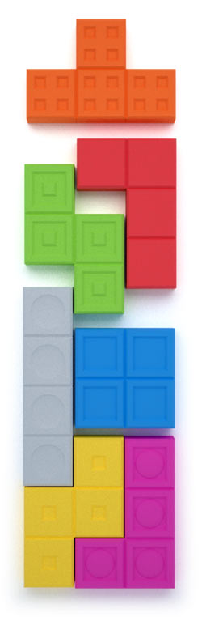
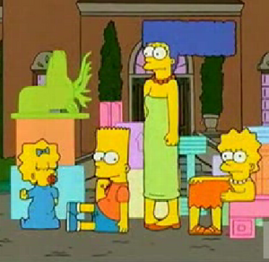
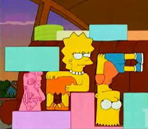

Tetris
 De: La Frikipedia, la enciclopedia extremadamente seria.
De: La Frikipedia, la enciclopedia extremadamente seria.
De la serie Videojuegos:
Tetris

Construír para destruír ¿hay cosa mejor?
| Desarrollado por:
|
Un acomodador de cajas
|
| Distribuido por:
|
El que avienta las cajas
|
| Diseñado por:
|
El fabricante de cajas
|
| Motor
|
va aumentado la velocidad hasta chocar
|
| Género(s)
|
Deportes
|
| Fecha de lanzamiento:
|
Ayer mismo si has viajado al pasado
|
| Modos de juego:
|
Se lanzan piezas poligonales hacia abajo para formar líneas que dan puntos. ¿Preguntas?
|
| Requisitos:
|
No tener nada mejor que hacer
|
| Disponible en:
|
Toda consola que se precie
|
| Formatos:
|
Muchos
|
| Edades:
|
Desde la edad de piedra
|
| Puntuaciones:
|
Depende del grado de enajenación adquirida
|
Cuidado, este juego engancha más que el tabaco, el crack, el alcohol y el LSD
Videojuego satánico creado en la Rusia Soviética que perturba las mentes de los jóvenes haciéndoles creer que apilando cosas pueden conseguir que estas desaparezcan espontáneamente.
Historia
Este juego fue concebido por horchata y de 1 Mc'Menu infantil.
El problema que durante el regimen estalinista, muchas piezas de tetris imigraron a otros paises
e intentaron encontrar su "hueco" en la sociedad [1]
 Diversas piezas de tetris montando una orgía.De arriba abajo y de izquierda a derecha la te, la ese, la ele, la i, la o, la zeta y la jota. Sí, el tetris no entiende demasiado de alfabetos...
 Versión herética de las ya mencionadas piezas
 Piezas heréticas en plena orgía tetrisera
Después de unos ajustes por parte de bill gates, el juego estaba listo para perforar las mentes jóvenes con su musiquita infernal y crear un ejercito de zombies tetrismaníacos.
Lo que ocurrió fué que, tras años de exitos en todo el mundo, la gente llegó a preguntarse: ¿Y que coño hago yo encajando estas jodidas piececitas?, el juego poco a poco cayó en el olvido.
Los expertos aseguran que, despues de este incidente, el indice de pajas (solitarios, jueguecitos con el calvo, sube y baja...) ascendió un 560 %.
No obstante, el juego esconde un lado oscuro, en la actualidad, las piezas del tetris intentan suicidarse en un ritmo de juego frenético, estampándose contra el suelo y sin éxito...
Mecánica del juego
Como ya mencionado está, las piezas del tetris caen por la pantalla en un afán de suicidio por no encontrar trabajo tras la crisis que logró que el mundo entero dejara de jugar al tetris. El objetivo del jugador es, actualmente, formar líneas para mutilar las piezas que caen intentando matarse para hacer más desgraciada aún su vida. Sorprendentemente, el tetris no está en ninguna consola de todo el mundo catalogado para mayores de 18 años.
Es digno también de comentar las características de las piezas que hay en el juego, siendo siete, a cada cual más dispar:
- El cuadrado u "o": Es la pieza que, por excelencia, que habita en los laterales de la pantalla de tetris. Los jugadores ven que en el medio no la pueden colocar, pues hay más espacios vacíos que en un queso gruyère, y por ese motivo la relegan a ocupar la posición lateral. Lo de siempre, se discrimina a la pieza más gorda de todas. Su aparición es por lo general baja, aunque es especialmente frecuente cuando se necesita que venga un palito (ver más abajo).
- Las "eses" y las "zetas": Las reinas del juego por excelencia. Su posibilidad de aparición es del 80% (al ser las piezas más deformes físicamente se suicidan en masa). La posibilidad de colocarlas correctamente es nula o menor aún, tendiendo a formarse enormes filas de estas piezas en el centro de la pantalla que imposibilitan el colocar ahí los ya mencionados cuadrados. Se cree que son descendientes directos del mismo Satanás.
- Las "tes": Con diferencia, la pieza más útil de todo el juego y la que menos sale. Por lo visto se trata de una pieza con una inteligencia mayor a la de sus compañeras, no tiende a intentar suicidarse tan a menudo, y menos para no lograrlo y acabar mutilada. Los pocos ejemplares de esta especie que se tiran por la pantalla lo hacen normalmente por inercia, porque centenares de piezas se están tirando y se ven incapaces de resistir tal marabunta.
- Las "eles" y las "jotas": Normalmente conocidas como "la pieza vaga" porque su forma da a pensar que están contínuamente sentadas o tumbadas (boca arriba o boca abajo). Es más frecuente que las tes, los cuadrados y los palitos, siendo comunmente el sustituto de estos últimos a la hora de mutilar las otras piezas. Sus restos suelen pulular por toda la pantalla, careciendo de posición específica.
- Los palitos o "íes": Brillan por su ausencia. En una partida, lo máximo de estas piezas que podrás encontrar son dos, tres a lo sumo (por buen jugador que seas y por mucho tiempo que te pases jugando). En este caso, la falta de ejemplares que atentan al suicidio es escasa no debido a su inteligencia, si no por la escasez de seres en dicha especie. En efecto, se trata de una especie en peligro de extinción y seriamente protegida por las asociaciones ecologistas. Y nosotros nos preguntamos "¿no se podían extinguir las eses y las zetas?". Darwin diría que es por la selección natural, pero sabemos perfectamente que esta situación se da porque el hábitat originario de las eses y las zetas es el sector con más natalidad de toda China. Lo que hay que ver...
Niveles del tetris
la gente cree que aparentemente el tetris solo tiene 10 niveles pero lo que no sabe la gente es que el tetris cuenta con 6 niveles extras que solo los 4 grandes viciaos al juego han pasado los 6 niveles extras son:
- Nivel infernal: en este nivel las piezas caen a 1km/seg el primer hombre que lo descubrio fue Un Yonki de los semaforos aun asi le llevo 415 euros con 69 centimos las pilas que tuvo que usar
- Nivel porno: en este nivel las piezas caen a 0,00000000000000001mm/por año pero la dificultad del juego son las continuas escenas porno que distraen a cualquiera
- Nivel imposible: este nombre la verdad lo pusieron por joder las piezas caen a 155km/seg
- Nivel diabolicamente imposible: este nivel caen las piezas a 1.000.000.000.000.000.000km/milesima de segundo sae lo consigueron pasar los otros tres viciaos hippies los tres lo hicieron por llamar la atencion
- Nivel extramademente jodido infernal diabolico porno imposible(traia mas cosas pero no se todas): en este nivel las piezas caen a 99999999 años luz
forma de medida por la 0.00000001 parte de una millonesima parte de una milesima de segundo ademas del porno del segundo nivel todos los que lo intentaron no aguantaron ni 1 segundo solamente el niño loco alemán se lo pasó (y mira como se ha quedado).
- Nivel que no tiene nombre pero lo tendra en la version 667: En este nivel las piezas no existen y debes comprar ladrillos, luego los incrustas en tu impresora de la PC y le das madrazos hasta que los ladrillos se impriman, luego agarras tu PC y la metes en la
pinga impresora hasta que te salga una hoja electronica con luces, luego vuelves a tu maquina del vicio tienda de videojuegos y compra ese que siempre haz querido pero no tenias dinero ni para un videojuego pr0n, regresas a tu casa y haces que TETRIS se ponga celoso y ahi empieza el juego de nuevo... Esquiva las bolas de fuego que Tetris te esta lanzando en tu cara.
- nivel extramademente infernal jodido diabolico de los cojones muy hiper imposible de superar:en este nivel todas las piezas van a 499999999999999999999999999999999999999999999999999999999999999999999999999k/segundo
tanto que nadie lo supera.
Premios por nivel
En efecto por pasar cada nivel te dan un premio, aquí enlistados:
- Nivel infernal: Por pasarlo te dan una galletita y lechita
materna tibia
- Nivel porno: Por pasarlo vienen contigo las que salian en la pornografía de ese nivel
- Nivel imposible: Por pasarlo le puedes dar otra patada en los cojones a George W. Bush
- Nivel diabólicamente imposible: Por pasarlo te dan una almohada hecha con la barba de Fidel Castro
- Nivel extramademente jodido infernal diabólico porno imposible etc, etc, etc...: Por pasarlo te dan algo tan maravilloso que ni siquiera habias soñado en sueños, algo tan fabuloso que hasta pregunta suprema (si, aquella cuya respuesta es 42)
- Nivel que aun no tiene nombre pero lo tendra en una version despues despues de 665: Quien sabe! Por ahi Tetris te llegue a dar algo mejor que el nivel anterior! QUIEN SABRA QUE SERA... 42
- nivel infernal jodiro diabolico de los cojones hiper muy imposible de los cojones:MIERDA PODRIDA!
Enfermedad del Tetris
Exacto , el Tetris es altamente para el celebro de el individuo que juega. El 99% de estos , encima suelen ser extremadamente gilipollas un poco cortos. Tras viciarse al tetris, el individuo empieza a verlo todo en forma de fichas de tetris. La cosa va a peor cuando empieza a desearlas y acaba tirandose un cubo de basura. Es my normal , que los enfermos acaben casados con un cubo. Tras las 5 primeras semanas de vicio , empezarán a ver piezas de tetris hasta en su culo. Más tarde , al mes , empezarán a delirar creyendose un pieza. En ese momento , la espalda estará tan forzada que se les partirá en dos. En ese momento solo tendran tres opciones:
Quedarse vegetales y babear en su cama , hasta que House les endose un lupos y de puro milagro los cure (Si , es un cabrón con suerte). En ese momento , el enfermo , se creerá de nuevo una pieza y saltará por la ventana, esperando encajarse y ganar la partida.
Se romperá la columna y morirá como un gilipollas de mierda ser poco inteligente , por así decirlo.
combertirte jodiamente en un puto cubo.
En resumen , No juegues al tetris o moriras como un puto gilipollas , uy ,esto , como un tonto.
Enlaces externos
- Primera versión de Tetris. En una dimensión por aquel entonces.
Referencias
- ↑ http://www.youtube.com/watch?v=u0R9QtAEiQ4
Autor(es):
- Krusher
- Nexo
- Er Makina
- Mu
- Simoman
- JacintoCanek
- Frikiman
- Aque
- Caraacnénerdi
- Roms
Frikipedia 2005-2016, Licencia
GFDL 1.2 - Extraído por FrikiLeaks